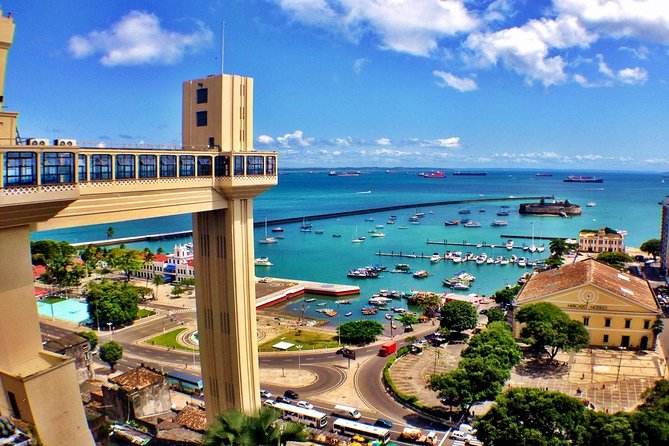
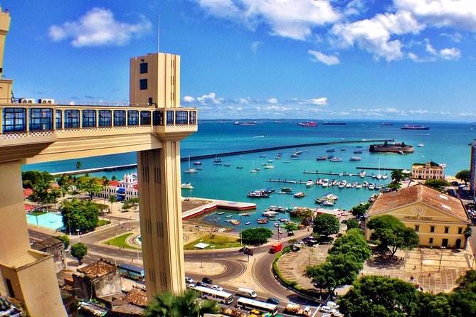
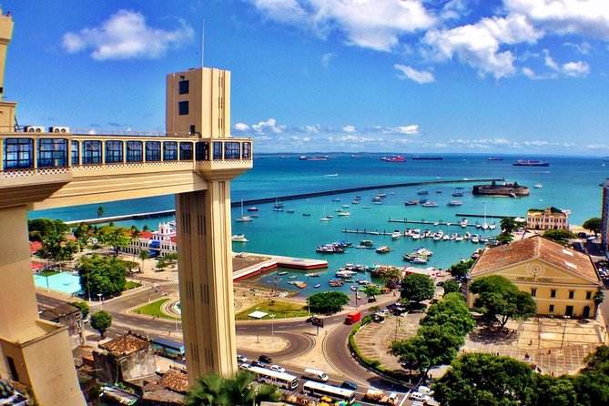

COVID-19*: Please visit our Help Center for regular updates and customer support.
Give yourself a break!
Destinations
Fernando de Noronha, Norhteast Brazil
Comprised of 21 islands and islets, the archipelago of Fernando de Noronha is a paradise of indescribable beauty, and was declared a Natural World Heritage Site by Unesco. For the islands to continue to preserve their nature, the number of visitors is limited and you have to pay an environmental preservation fee to enter the island.
The combination of crystal clear waters, golden sands, and marine life fascinate people from all over the world. Its beaches are divided between the inside sea (waters toward the Brazilian mainland) and the outside sea (waters toward the Atlantic Ocean). It is very common to see these waters in the lists of the most beautiful beaches of Brazil and the world, such as the beaches Praia dos Porcos, Praia dos Leões, and Baía do Sancho, twice elected the best beach of the planet by the Traveller’s Choice Awards of TripAdvisor .
Foz do Iguaçú, South Brazil
At the western end of the state of Parana you will find Foz do Iguaçu, one of the most picturesque cities of the country, thanks to the majestic 275 waterfalls that form the Iguaçu Falls. Located on the border between Brazil and Argentina, in the Iguaçu National Park, the Falls attract hundreds of thousands of visitors from all over the world.
Listed as a Natural World Heritage Site by Unesco, the Park had its Falls selected as one of the New World’s Seven Natural Wonders, and it protects the endangered species of fauna and flora, such as the Brazilian Jaguar and araucaria. There you can visit the Garganta do Diabo, the biggest waterfall around, which is 90 meters high.
Another attraction of Foz (the affectionate nickname of Foz do Iguaçu) is the Birds Park, were you can enjoy an area of 17 ha of native forest and observe more than 800 species of birds (hyacinth macaws, ararajubas, black-fronted piping guan and others) that live in the area.
Salvador, Bahia - Brazil

Salvador is the capital of Bahia State, a place well known for its natural beauties, for the kindness of its people and for the strong influence of the African culture.
The moves of capoeira - a martial art that looks like a dance - the smells and flavors of the delicacies, the religious mix and the cultural diversity are samples of the happiness of a people that knows, maybe for it is surrounded by natural beauties, the true meaning of life. The city is also the location of one of the country’s most vibrant and disputed carnival parties.
Brazil’s first capital preserves an important historical city center, listed as Unesco’s Cultural Heritage Site: the Pelourinho, which gives the visitor the opportunity to visit Brazilian Baroque Churches and century-old manors.
There are more than 300 churches in Salvador. One of them is São Francisco Church, recognized by its grandiosity. Another important attraction is Senhor do Bonfim Church, one of the biggest symbols of the religious mix in Bahia.
São Paulo, Brazil
Sao Paulo is huge: there are 12 million people living in the largest city of the South Hemisphere and the third biggest city in the Americas. Sao Paulo gathers more than 100 museums, 120 theaters, around 300 cinemas, besides having several parks and green areas. It’s the Latin American capital of conventions and events, which has a super structure in the Anhembi Convention Center to host congresses and conventions.
Sampa, an affectionate nickname given to the city, is delightful, and is famous for offering one of the best nightlives around the planet. Known as the Latin American capital of good restaurants, it has high standard international restaurants with fine regional dishes signed by renowned Brazilian chefs. It is considered as well the Brazilian pizza capital, featuring more than six thousands pizza places around the city.
The Sao Paulo Art Museum (MASP), spot listed by the Brazilian Institute of History and Art Heritage (Iphan) in 2003, has a collection of 10 thousand pieces, including African, American, Asian, Brazilian and European Art, from the ancient times to the 21st Century; including paintings, sculptures, drawings, photography and dressings. The State Pinacoteca, a rich visual arts museum, houses relevant international exhibitions and displays valuable pieces from the last 200 years of the Brazilian Art.
Rio de Janeiro, Brazil
Incredible natural attractions, spontaneity that transforms everything into party and hospitality, world-famous iconic monuments - all that makes the city of Rio de Janeiro an unforgettable and unique destination.
With 450 year of history, Rio boasts fascinating treasures in its museums with enviable collection. The land of carnival and samba, and of several theaters, music venues, commercial and gastronomic locations open during the whole year.
But it is the match of the geography of the area – the sea, mountains and forests – along with the human presence that makes Rio de Janeiro a unique city. Extraordinary scener-ies surround many places in the city. It was the first city in the world to be considered UNESCO’s Cultural Heritage of Humanity.
Recently, in 2007, Valongo Wharft was also considered UNESCO’s Cultural Heritage of Humanity. Built in 1811, it was the landing place and trade area of enslaved Africans until 1831.
Besides the most famous attractions, like Christ the Redeemer, the art deco statue of Jesus Christ and the Sugarloaf Mountain, a mountain range, the city has also many nature, adventure, religious, historic and cultural tours, such as walks in the Botanical Garden and rides in the Santa Teresa Tram, visitations to the Metropolitan Cathedral and to the Museum of Modern Art, and the possibility of taking off from Pedra Bonita’s ramp and flying over the city.
 
